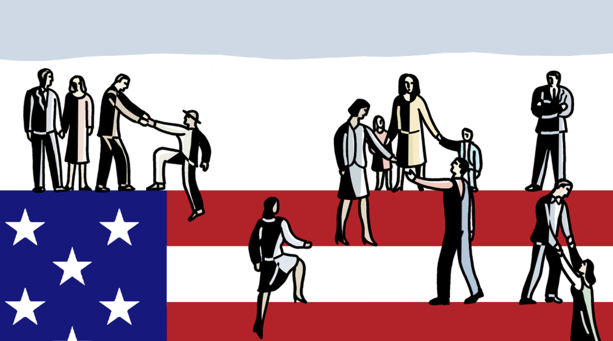
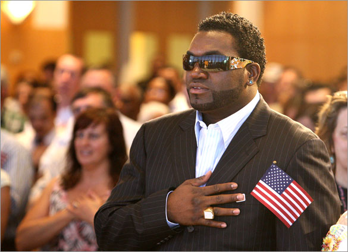

Citizenship is the status of being part or belonging to a larger community, in most cases a certain country.
|  Citizen Picture Link |  David Ortiz Picture Link |
Honesty is the quality of being truthful. Honesty is quite important in terms of citizenship as it creates a bond between yourself and the community. This also creates a trust amongst you and your peers which will result in a more successful overall experience.
Compassion is the ability to care about the affairs of others, usually in unfortunate times. I believe compassion to only be necessary in certain cases such as large scale cases or devastating individual cases. You shouldn't bring someone an Edible Arrangement because their fish died, but it's definitely important to let the other members of the community that you care.
Respect is a certain admiration of someone because their achievements or abilities. This is necessary in a community setting as respect can simply just be multiple people coexisting without actually being forced to talk to each other. The ability to respect other people and their property is something that a community needs to avoid conflict.
Responsibility is having a duty to do something that is expected of you. There are definitely things that citizens are responsible for such as voting, taxes, following the laws, etc. All these things allow the people to live their own lives while still maintaining safety, so responsibility is necessary in a setting like this.
Courage is the ability to do something that you may fear. In the case of a citizen, this may mean protesting something that others may disagree with. This is still necessary because if you want the government to change something within reason, then you should strive for that change, thus making courage necessary for a good citizen.
Courage Picture LinkTrust goes hand in hand with honesty, but it is still an important aspect of being a citzen. The community will be stronger if everyone feels that they can depend on someone to something, especially in terms of politics.
The most recent act of my citizenship had involved the hockey team and welcoming the new freshmen. This involved the compassion aspect described earlier as I remember being an intimidated freshman, so I introduced myself to one of the freshman and helped him feel more like a part of the team. This is an act of citizenship as it involves a member of a community trying to improve the community.